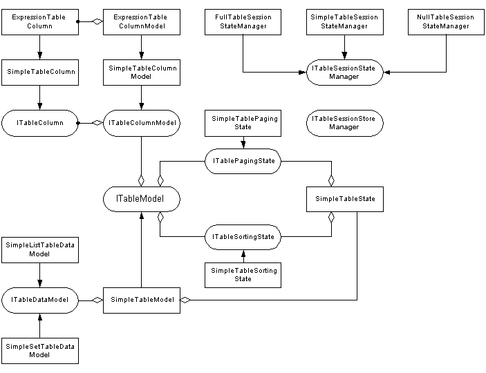

|
|
||||||||||||||||||||||||||||||||||||||||||||||||||||||||||||||||||||||||||||||||||||||||||||||||||||||||||||||||
|
Description
A version of the Table component
designed for use in a form. Like Table, this component allows you to present a sortable and pagable table
simply and easily. It also stores the items it dispays in hidden fields in the form,
so that they are identical during the rewind cycle when the form is submitted,
and generates links that submit the form, so that any other form information is preserved.
The differences between FormTable and Table are the following:
The FormTable component allows you to manipulate its appearance by allowing you
to define the 'class' attributes of its internal elements. If you want to change
the structure of the table, however, you can instead build your own using the
lower level components
The FormTable component delegates the handling of the table model and related
activities to the |
|||||||||||||||||||||||||||||||||||||||||||||||||||||||||||||||||||||||||||||||||||||||||||||||||||||||||||||||||
|
Providing the data
There are many ways to provide the component with the data it has to render, but here are the three major ones:
|
|||||||||||||||||||||||||||||||||||||||||||||||||||||||||||||||||||||||||||||||||||||||||||||||||||||||||||||||||
|
Defining the columns
If you define the table columns using the The string describing the columns must be formatted in the following way:
Here is an example of the use of a description string to define columns: columns="locale:toString(), =currencyColumn, verbosity:Verbosity:currentRowVerbosity, !delete" |
|||||||||||||||||||||||||||||||||||||||||||||||||||||||||||||||||||||||||||||||||||||||||||||||||||||||||||||||||
|
See Also
TableColumns, TablePages, TableRows, TableValues, TableView |
|||||||||||||||||||||||||||||||||||||||||||||||||||||||||||||||||||||||||||||||||||||||||||||||||||||||||||||||||
Parameters
Body: ignored |
|||||||||||||||||||||||||||||||||||||||||||||||||||||||||||||||||||||||||||||||||||||||||||||||||||||||||||||||||
|
Examples
You can find examples in the Tutorial as part of the Workbench application under the "Table" tab. That page consists of two components -- the LocaleList component and the LocaleSelection component. The LocaleList component allows you to view all Locales in a table (similar to the example above), as well as to choose Locales from the table and add them to your "selection". The LocaleSelection component displays the selected Locales and provides additional information about them. It also allows Locales to be removed from the selection. Even though the two components utilizing the Table are placed on a single page, they can operate without any interference from each other with no effort at all on part of the developer -- each table can be sorted independently, for example. This is a good illustration of the power of Tapestry's component approach. |
|||||||||||||||||||||||||||||||||||||||||||||||||||||||||||||||||||||||||||||||||||||||||||||||||||||||||||||||||
Table Internals GuideThis section is for advanced uses of the Table components only.There are two important elements that comprise the Table functionality -- the table model and the table components. The table model classes and interfaces provide the Table with the ability to display and manipulate data from various different sources. Using them in various combinations and customizing them allows the developer to modify the behaviour of the table according to his needs. The table components are responsible for displaying the data provided by the table model, and working with them allows the developer to radically change the appearance of the table if necessary. 1. The ModelThis section will discuss the table model and how it can be used and modified to satisfy the needs of the developer. The next section will then concentrate on how the table components can be used to customize the appearance of the table as much as possible. 1.1. The Table Model Family of ClassesEven though using a table model can be very simple, as shown in the first example, behind the curtains it may consist of many different interfaces and classes that work together to allow you to modify different aspects of the table data representation and manipulation without a lot of effort.Below you can see a UML Class diagram of the interfaces and classes in the Table Model family. The rest of this section will discuss how they can be used and modified as needed.  1.2. The Table ModelThe table model provides the information needed by the view to render the table. For example, the Table component may use its tableModel parameter to determine what to display.The Tapestry components access the table model via the relatively simple ITableModel interface, which is the facade of the table model hierarchy. A variety of implementations of this interface can be created to target different cases. The contrib library currently defines only one rudimentary implementation that can be used in the majority of situations -- the SimpleTableModel. While versatile, however, this implementation may not be suitable for all cases, and hence you may create your own whenever necessary. Using the SimpleTableModel is very easy -- you just need to provide it with the data to be displayed and the columns that the table will have: Object[] data = ...;
ITableColumn[] columns = ...;
ITableModel model = new SimpleTableModel(data, columns);
This model can then be passed to the Table component, and it will display the
data using the given columns. 1.3. The Data ModelThe SimpleTableModel can also obtain its data via the ITableDataModel interface. This allows the source of data to be abstracted.The contrib library provides two standard implementations of this interface. The SimpleListTableDataModel and the SimpleSetTableDataModel. As the names indicate, the former provides the table data from Lists and arrays, while the latter provides the data from Sets and other unordered Collections. Using the data models is very simple as well: ArrayList data = ...;
ITableDataModel dataModel = new SimpleListTableDataModel(data);
ITableModel model = new SimpleTableModel(dataModel, ...);
An example of using SimpleSetTableDataModel can be found in the LocaleSelection component in the Workbench. The storage of the selected locales there is implemented precisely using that table data model. 1.4. The Column ModelA column in the table model is defined using the ITableColumn interface. It provides the information needed to identify the column (the column name), to render the column (the columnRender that renders the heading, and the valueRenderer that renders each cell), and to sort the column (whether the column is sortable and what Comparator should be used for sorting the table). The basic implementation of ITableColumn provided is SimpleTableColumn. It takes care of all mundane tasks, such as supplying a renderer for the column header, and allows you to define a column by only providing its name and a way to extract the column data from the row object by overriding the getColumnValue() method. This is demonstrated by the example below that also configures the column to be sortable: // Create a new sortable column with name and title "Full Name"
ITableColumn fullNameColumn = new SimpleTableColumn("Full Name", true) {
public Object getColumnValue(Object value) {
PersonInfo info = (PersonInfo) value;
return info.getLastName() + ", " + info.getFirstName();
}
};
Other methods can be overridden as well to provide additional features, such as custom rendering, as it will be shown in the next section. The above can be achieved in a simpler, but not as flexible manner by using ExpressionTableColumn. It inherits SimpleTableColumn, and allows you to create columns whose data is obtained via OGNL: // Create a new sortable column with name and title "Occupation"
ITableColumn occupationColumn = new ExpressionTableColumn("Occupation", "occupation", true);
// Create a new sortable column with name and title "Full Name"
ITableColumn fullNameColumn = new ExpressionTableColumn("Full Name", "lastName + \", \" + firstName", true);
The table columns are supplied to the table model using a List -like container defined by the ITableColumnModel interface. The generic implementation provided for this interface is SimpleTableColumnModel, which contains an array of ITableColumn objects of any type. One more specific implementation available is the ExpressionTableColumnModel , which containsExpressionTableColumn objects. It allows you to define the columns of your table quickly and easily, by providing a name and an OGNL expression for each one in a String array: // Generate a simple sorting column model that uses OGNL to get the column data
ITableColumnModel objColumnModel =
new ExpressionTableColumnModel(new String[] {
"Locale", "toString()",
"Language", "language",
"Country", "country",
"Variant", "variant",
"ISO Language", "ISO3Language",
"ISO Country", "ISO3Country"
}, true);
1.5. The Table StateThe state of the table model consists of any data that is not related to the contents of the table, but instead carries information about its presentation. The standard table model supports two states -- the paging state (how many rows per page; which page we are on) and the sorting state (which column we are sorting on; in an ascending or a descending order). The paging state is defined by the ITablePagingState interface and is implemented in its simplest form by SimpleTablePagingState. Similarly, the sorting state is defined by ITableSortingState and is implemented by SimpleTableSortingState. The states are typically accessed and modified by the components presenting the table (e.g. the TablePages component can change the current page based on the user selection). The user can also modify them, which is often necessary at initialization: ITableModel model = new SimpleTableModel(data, columns);
// Set page size to 15 elements and go to page 8
model.getPagingState().setPageSize(15);
model.getPagingState().setCurrentPage(8);
// Sort by column 'price' in an ascending order
model.getSortingState().setSortColumn("price", ITableSortingState.SORT_ASCENDING);
The SimpleTableModel class keeps the two states together in the SimpleTableState object, which can be passed via the constructor and obtained at any time using the getState() method. This is often useful when storing the state by itself is necessary (see below). 1.6. The Session State ManagerIn Web interfaces, unlike client-side GUIs, the information about the state of the presentation must be kept in the session object between requests. What has to be kept and what can be thrown away and recreated during the next request differs in each case, however. The policy of what to do typically involves a tradeoff between memory and CPU power, and hence it depends very much on the specific situation. The ITableSessionStateManager interface is used to define precisely this policy. It defines what part of the table model has to be saved in the session and can recreate the table model using the saved information when the next request comes. The Table and the TableView components have a tableSessionStateManager binding that allows such a manager to be supplied. When the table model is needed at the beginning of a new request, the component use the following procedure to obtain it:
Immediately before rendering, the opposite procedure takes place:
Three standard implementations of the ITableSessionStateManager interface are provided that address the common cases that can be implemented without custom code. Each of them implements a different policy for extracting session state from the model and hence is suitable for some specific situations:
One approach that is a good compromise between memory consumption and CPU load is to store in the session only the state and the IDs of the objects in the table. In this way CPU is not loaded, since re-sorting is no longer necessary, and the memory consumption is not excessive, since the IDs tend not to take a lot of space. Implementing this approach, however, requires a custom manager, and possibly a custom TableModel to limit the data loaded from the database only to the elements that will be displayed on the current page. 1.7. The Session Store ManagerWhile the Session State Manager determines what to store in the session, the Session Store Manager determines how to store data in the session. Normally the information that needs to be saved is stored using the Tapestry persistent property mechanism. If a Session Store Manager is provided, however, it is asked to take care of storing and loading of that information. This is typically necessary in two specific cases:
The Session Store Managers implement the ITableSessionStoreManager interface. There are no default implementations of this interface -- the developer must supply his own.
2. Changing appearanceWhile the table model defines what data should be displayed in the table, it does not define how that data would look. The appearance is an important element of the web applications, however, and so the table components provide a number of ways to the developer to customize their looks. 2.1. Setting stylesThe simplest way to modify how the table looks is by using CSS. The Table component provides a number of bindings allowing you to set the CSS class of all major elements of the table. Please have a look at Table's JavaDoc for details. One interesting use of this approach is to define an evenOdd bean of type org.apache.tapestry.bean.EvenOdd and bind the rowsClass parameter of table to "beans.evenOdd.next". In this way odd rows in the table will receive the class "odd", and even rows will receive the class "even", which allows for different formatting of neighbouring rows. 2.2. Changing layoutThe Table component is very easy to use, but it may become a "straight jacket" if a different layout of the table is required. In such a case, instead of Table, the developer could use the lower level table components described below:
The Table component itself is based on those components. Here is its template: <span jwcid="tableView">
<span jwcid="condPages"><span jwcid="tablePages"/></span>
<tr><span jwcid="tableColumns"/></tr>
<tr jwcid="tableRows"><td jwcid="tableValues"/></tr>
</span>
You can use those components in a similar way to create a layout that you want. You can change the location of the page navigation section, add other columns in the table manually, or insert custom formatting. You can even build your own components to replace some of the standard ones. A good example of this approach is the LocaleList component in the Workbench. It modifies the layout slightly and adds a separate column in the table that is not defined the table model. 2.3. Changing renderersAnother way to change the appearance of the table is by using the ITableColumn ability to provide custom renderers for both column headers and values. By default, SimpleTableColumn uses RenderString to display values and the SimpleTableColumnComponent to render the headers. That component makes the header a link if the column is sortable, handles clicks on it, and displays an indicator if the column is currently used for sorting. If is quite possible to use custom components to render the values or the headers in a different way. This is the approach taken by the LocaleSelection component in the Workbench. It uses Block sections in its template to render some columns differently (see the demo). While using this mechanism is not hard at all, there are a number of common pitfalls that the developer must avoid. If you would like to go that route, please see how the SimpleTableColumnComponent and the LocaleSelection component are implemented and read the JavaDocs of org.apache.tapestry.components.BlockRenderer and org.apache.tapestry.ComponentAddress beforehand.
| |||||||||||||||||||||||||||||||||||||||||||||||||||||||||||||||||||||||||||||||||||||||||||||||||||||||||||||||||